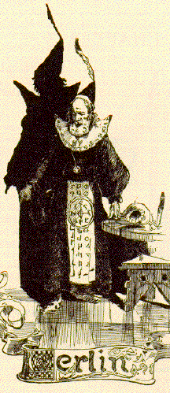

King Arthur's Court in MT's AmericaWhen Clemens was growing up, the most popular version of Camelot in America was Sir Walter Scott's, as expressed in romances like Ivanhoe (1819). During MT's career, Tennyson's Idylls of the King (1842-1885) was almost as widely read as a popular novel. In Chapters 40 and 46 of Life on the Mississippi (1883), MT condemned Scott as an "enchanter"; Dan Beard, illustrator of Connecticut Yankee, was making a similar point visually when he drew Merlin to look like Tennyson, as you can see by comparing Beard's magician (right) with the picture of the English poet laureate (left) taken from the frontispiece of an 1893 edition of the Idylls published in Baltimore. A major goal of MT's novel, as the work of a writer who thinks of himself as both a democrat and a realist, is to use Hank's "unpoetic" observations of Arthurian England to undo the spell he felt 19th-century medievalism had cast over Europe's aristocratic past. This is the project Hank refers to when he asserts that "none of us has been taught to see" the "unspeakably bitter and awful Terror" that the feudal system inflicted on the vast majority of people. Camelot remains one of the fixed points of reference in the imagination of Western culture, but it was an especially popular subject at the time MT wrote his novel. This portion of the archive presents a few images chosen to represent the way MT's times "saw" King Arthur's Court. Like Hank Morgan, many of MT's contemporaries traveled imaginatively back to Camelot; what they tended to "see" is precisely what MT wanted them to re-view.
|